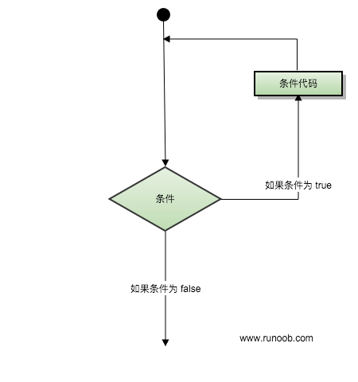
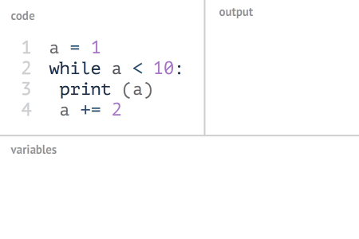
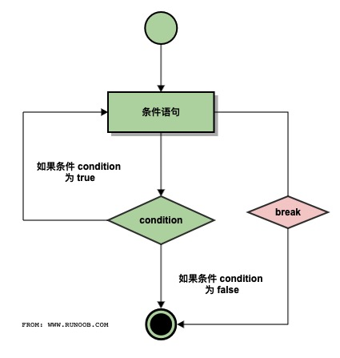
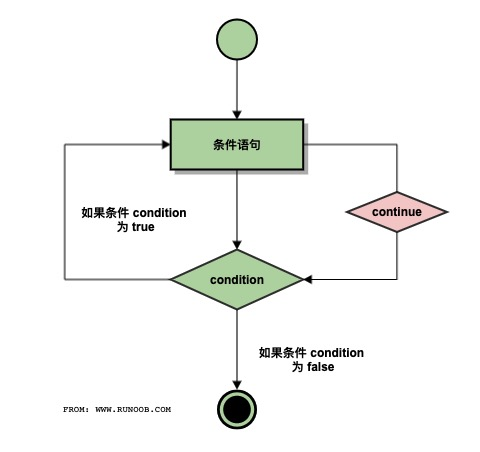
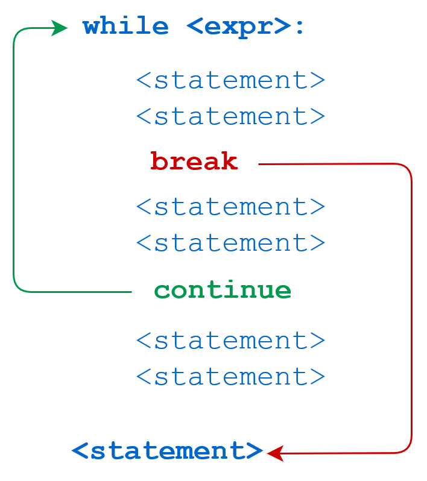
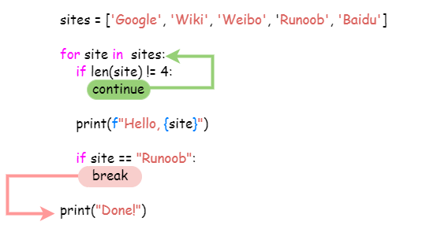

Python3 ループ文
この章では、Python のループ文の使用方法を紹介します。
Python のループ文には for と while があります。
Python のループ文の制御構造図は次のとおりです。

ループ制御のキーワードとメソッド
| キーワード / 関数 | 説明 | 例 |
|---|---|---|
for |
反復ループ。シーケンスまたは反復可能オブジェクトを走査するために使用します。 | for i in list: |
while |
条件ループ。条件が True の間、実行を続けます。 | while x > 0: |
break |
現在のループを直ちに終了します。 | break |
continue |
今回のループの残りのコードをスキップして、次の反復に進みます。 | continue |
else（ループ） |
ループが正常に終了した（break されていない）場合に実行されます。 | for i in range(3): ... else: ... |
pass |
ループ内のプレースホルダ文（空操作） | for i in range(5): pass |
range() |
整数シーケンスを生成し、通常 for ループと組み合わせて使用します。 | range(0, 5) |
enumerate() |
走査時にインデックスと値を同時に取得します。 | for i, v in enumerate(list): |
while ループ
Python の while 文の一般的な形式：
while 判断条件(condition)：
执行语句(statements)……
実行フローチャートは次のとおりです。

Gif デモの実行：

同様に、コロンとインデントに注意する必要があります。また、Python には do..while ループはありません。
次の例では、while を使用して 1 から 100 までの合計を計算しています。
例
実行結果は次のとおりです。
1 到 100 之和为: 5050
無限ループ
条件式を常に false にしないように設定することで、無限ループを実現できます。例は次のとおりです。
例
上記のスクリプトを実行すると、出力結果は次のとおりです。
输入一个数字 :5 你输入的数字是: 5 输入一个数字 :
あなたは使用できます CTRL+C現在の無限ループを終了するために。
無限ループは、サーバー上のクライアントからのリアルタイムリクエストに非常に役立ちます。
while ループでの else 文の使用
while の後の条件文が false の場合、else の文ブロックが実行されます。
構文形式は次のとおりです。
while <expr>:
<statement(s)>
else:
<additional_statement(s)>
expr 条件文が true の場合、statement(s) 文ブロックが実行され、false の場合、additional_statement(s) が実行されます。
数字をループで出力し、大小を判定します：
例
上記のスクリプトを実行すると、出力結果は次のとおりです。
0 小于 5 1 小于 5 2 小于 5 3 小于 5 4 小于 5 5 大于或等于 5
単純な文のグループ
if 文の構文と似ていますが、while ループ本体に文が1つしかない場合は、その文を while と同じ行に書くことができます。次のようになります。
例
注意：上記の無限ループは、CTRL+C を使用してループを中断できます。
上記のスクリプトを実行すると、出力結果は次のとおりです。
欢迎访问菜鸟教程! 欢迎访问菜鸟教程! 欢迎访问菜鸟教程! 欢迎访问菜鸟教程! 欢迎访问菜鸟教程! ……
for 文
Python の for ループは、リストや文字列などの任意の反復可能オブジェクトを走査できます。
for ループの一般的な形式は次のとおりです。
フローチャート：

Python for ループの例：
例
上記のコードを実行すると、出力結果は次のとおりです。
Baidu Google Runoob Taobao
文字列内の各文字を出力するためにも使用できます：
例
上記のコードを実行すると、出力結果は次のとおりです。
r u n o o b
整数範囲の値は range() 関数と組み合わせて使用できます：
例
上記のコードを実行すると、出力結果は次のとおりです。
1 2 3 4 5
for...else
Python では、for...else 文はループ終了後にコードを実行するために使用されます。
構文形式は次のとおりです。
for item in iterable:
# 循环主体
else:
# 循环结束后执行的代码
ループが完了（つまり iterable 内のすべての要素を走査し終えた）後に、else 節のコードが実行されます。ループ中に break 文に遭遇した場合はループが中断され、その場合 else 節は実行されません。
例
print(x)
else:
print("Finally finished!")
スクリプトを実行すると、出力結果は次のとおりです。
0 1 2 3 4 5 Finally finished!
次の for の例では break 文を使用しています。break 文は現在のループ本体を抜け出すために使用され、else 節は実行されません。
例
スクリプトを実行すると、"Runoob" をループしたときにループ本体から抜け出します。
循环数据 Baidu 循环数据 Google 菜鸟教程! 完成循环!
range() 関数
数値シーケンスを走査する必要がある場合は、組み込みの range() 関数を使用できます。数値の列を生成します。例：
例
range() を使用して区間の値を指定することもできます：
例
range() を指定した数値から開始し、異なる増分（負数にすることもできます。これを「ステップ」と呼ぶこともあります）を指定することもできます：
例
負数：
例
range() 関数と len() 関数を組み合わせて、シーケンスのインデックスを走査できます。次のようになります：
例
range() 関数を使用してリストを作成することもできます：
例
range() 関数の使用方法の詳細については、以下を参照してください：https://www.runoob.com/python3/python3-func-range.html
break と continue 文およびループ内の else 節
break 実行フローチャート：

continue 実行フローチャート：

while 文のコード実行プロセス：

for 文のコード実行プロセス：

break文は for および while のループ本体を抜け出すことができます。for または while ループから終了した場合、対応するループの else ブロックは実行されません。
continue文は、現在のループブロック内の残りの文をスキップして、次のループに進むことを Python に伝えるために使用されます。
例
while での break の使用：
例
while n > 0:
n -= 1
if n == 2:
break
print(n)
print('ループ終了。')
出力結果は次のとおりです。
4 3 循环结束。
while での continue の使用：
例
while n > 0:
n -= 1
if n == 2:
continue
print(n)
print('ループ終了。')
出力結果は次のとおりです。
4 3 1 0 循环结束。
その他の例は次のとおりです。
例
上記のスクリプトを実行すると、出力結果は次のとおりです。
当前字母为 : R 当前字母为 : u 当前字母为 : n 当前字母为 : o 当前字母为 : o 当前变量值为 : 10 当前变量值为 : 9 当前变量值为 : 8 当前变量值为 : 7 当前变量值为 : 6 Good bye!
次の例では文字列 Runoob をループし、文字 o に遭遇したら出力をスキップします：
例
上記のスクリプトを実行すると、出力結果は次のとおりです。
当前字母 : R 当前字母 : u 当前字母 : n 当前字母 : b 当前变量值 : 9 当前变量值 : 8 当前变量值 : 7 当前变量值 : 6 当前变量值 : 4 当前变量值 : 3 当前变量值 : 2 当前变量值 : 1 当前变量值 : 0 Good bye!
ループ文には else 節を設けることができます。これは、リストを使い果たした（for ループの場合）か、条件が false になった（while ループの場合）ためにループが終了したときに実行されます。ただし、ループが break によって終了された場合は実行されません。
以下の例は素数を調べるループの例です:
例
上記のスクリプトを実行すると、出力結果は次のようになります：
2 是质数 3 是质数 4 等于 2 * 2 5 是质数 6 等于 2 * 3 7 是质数 8 等于 2 * 4 9 等于 3 * 3
pass 文
Python pass は空文であり、プログラム構造の完全性を保つためのものです。
pass は何も行わず、通常はプレースホルダ文として使用されます。次の例の通りです。
例
最小のクラス:
例
以下の例では、文字が o のときに pass ステートメントブロックを実行します:
例
上記のスクリプトを実行すると、出力結果は次のようになります：
当前字母 : R 当前字母 : u 当前字母 : n 执行 pass 块 当前字母 : o 执行 pass 块 当前字母 : o 当前字母 : b Good bye!その他の拡張
tianqixin
429***967@qq.com
参考URL
組み込みの enumerate 関数を使用して走査する:
for index, item in enumerate(sequence): process(index, item)例
tianqixin
429***967@qq.com
参考URL
夏木研
104***4137@qq.com
for ループ 1-100 のすべての整数の和
#!/usr/bin/env python3 n = 0 sum = 0 for n in range(0,101):# n 范围 0-100 sum += n print(sum)夏木研
104***4137@qq.com
zero
562***402@QQ.COM
ループの入れ子を使用して九九の掛け算表を実装する:
#!/usr/bin/python3 #外边一层循环控制行数 #i是行数 i=1 while i<=9: #里面一层循环控制每一行中的列数 j=1 while j<=i: mut =j*i print("%d*%d=%d"%(j,i,mut), end=" ") j+=1 print("") i+=1zero
562***402@QQ.COM
Micachen
811***747@qq.com
for ループの入れ子使用例：
#!/usr/bin/python3 for i in range(1,6): for j in range(1, i+1): print("*",end='') print('\r')出力結果：
Micachen
811***747@qq.com
payboy
jk@***.com
1-100 の和:
payboy
jk@***.com
Try
910***115@qq.com
while ループ文と for ループ文での else の使用の違い：
Try
910***115@qq.com
どこで学んでもそこで共有
dre***fjay@163.com
pass の役割について：
pass は単に構文エラーを防ぐためのものです。
if a>1: pass #如果没有内容，可以先写pass，但是如果不写pass，就会语法错误pass は空文です。コードブロック内や関数を定義するときに、内容がない場合、または何も処理せずにスキップしたい場合に pass を使用できます。
どこで学んでもそこで共有
dre***fjay@163.com
若能绽放光芒
740***128@qq.com
#十进制转化 while True: number = input('请输入一个整数(输入Q退出程序)：') if number in ['q','Q']: break #如果输入的是q或Q,结束退出 elif not number.isdigit(): print('您的输入有误！只能输入整数(输入Q退出程序)！请重新输入') continue #如果输入的数字不是十进制,结束循环,重新开始 else : number = int(number) print('十进制 --> 十六进制 ：%d -> 0x%x' %(number,number)) print('十进制 --> 八进制 ：%d -> 0o%o' %(number,number)) print('十进制 --> 二进制 ：%d ->'%number,bin(number))若能绽放光芒
740***128@qq.com
HantCoCo
zco***@163.com
バブルソート、python バージョン
解説：非常に古典的なソート方法です。配列の最初の要素（インデックス0）から始めて、後ろの要素と比較します。前の要素が後ろの要素より大きい場合は、位置を入れ替えます。最後までループします（つまり、a0とa1を比較した後、a1とa2を比較...）。最大の要素が配列の最後に移動するので、最後の要素を除いて、残りの配列要素に対して上記の操作を行います。最終的に、配列全体が小さい順から大きい順の並びになります。
# python 冒泡排序 def paixu(li) : max = 0 for ad in range(len(li) - 1): for x in range(len(li) - 1 - ad): if li[x] > li[x + 1]: max = li[x] li[x] = li[x + 1] li[x + 1] = max else: max = li[x + 1] print(li) paixu([41,23344,9353,5554,44,7557,6434,500,2000])HantCoCo
zco***@163.com
jason
598***652@qq.com
じゃんけんゲーム
import random while 1: s=int(random.randint(1,3)) if s==1: ind="石头" elif s==2: ind="剪刀" elif s==3: ind="布" m=input('输入石头，剪刀，布，输入end结束游戏：') blist=['石头','剪刀','布'] if(m not in blist) and (m!='end'): print("输入错误，重试：") elif(m=='end')and(m not in blist): print(ind) print("\n游戏退出") break elif m==ind: print("平") elif (m == '石头' and ind =='剪刀') or (m == '剪刀' and ind =='布') or (m == '布' and ind =='石头'): print ("电脑出了： " + ind +"，你赢了！") else: print ("电脑出了： " + ind +"，你输了！")jason
598***652@qq.com
sprinkle
117***1554@qq.com
元の九九の掛け算表を反時計回りに出力：
<pre>for i in range(9,0,-1): for j in range (1,i): print("\t",end="") for k in range (i,10): print("%dx%d=%d" % (i,k,k*i), end="\t") print()sprinkle
117***1554@qq.com
sprinkle
117***1554@qq.com
宝くじゲーム
import random t1="开始游戏" t2="结束游戏" print(t1.center(50,"*")) data1=[] money=int(input("输入投入的金额：")) print("你现在余额为：%d元"%money) while 1: for i in range(6): n = random.choice([0, 1]) data1.append(n) if money<2: print("你的余额不足，请充值") m=input("输入投入的金额：") if int(m)==0: break else: money=int(m) while 1: j=int(input("输入购买彩票数量")) if money-j*2<0: print("购买后余额不足，请重新输入") else: money = money - j * 2 print("你现在余额为：%d元" % money) break print("提示：中奖数据有六位数，每位数为0或者1") n2=input("请猜测中奖数据：（输入的数字为0或1）") print(str(data1)) f=[] for x in n2: f.append(x) f1 = str(f) f2 = f1.split("'") f3 = "".join(f2) print("你猜测的数据为：", f3) if f3==str(data1): print("中奖数字为：",data1) print("恭喜你中大奖啦") money=money+j*100 print("你现在余额为：%d元" % money) else: print("中奖数字为：", data1) print("没有中奖，请继续加油") con = input("请问还要继续么？结束请输入no,继续请任意输入字符：") if con=="no": break data1=[] print(t2.center(50,"*")) print("你的余额为：%d元"%money)sprinkle
117***1554@qq.com
dzr
lei***407631@qq.com
直感的な九連環の解法を生成：
#!/usr/bin/python x = ["-θ","-θ","-θ","-θ","-θ","-θ","-θ","-θ","-θ"] y = ["—","—","—","—","—","—","—","—","—"] def down(n, l): #拆解 v = len(l) #计算数列个数用于改变数列对应位置 if n>2: down(n-2, l) #拆下n-2的环 l[v-n] = "—" #将v-n位"-θ"改为"—" 表示拆下 for x in l: #输出列表每一个元素 print(x,end=' ') print() #换行 up(n-2, l) #装上n-2位 down(n-1, l)#拆下n-1位， 后面同理 if n==2: l[v-2], l[v-1] ="—","—" for x in l: print(x,end=' ') print() if n<2: l[v-1] = "—" for x in l: print(x,end=' ') print() def up(n, l): v = len(l) if n>2: up(n-1, l) down(n-2, l) l[v-n] = "-θ" for x in l: print(x,end=' ') print() up(n-2, l) if n==2: l[v-2], l[v-1] = "-θ","-θ" for x in l: print(x,end=' ') print() if n<2: l[v-1] ="-θ" for x in l: print(x,end=' ') print() print("拆解\n") for i in x: print(i,end=' ') print() down(9, x) print('---------------------------------\n','装上\n') for i in y: print(i,end=' ') print() up(9, y) print("结束")九連環の分解、再帰アルゴリズム
def down(n): if n>2: down(n-2) print('卸下',n,'环') up(n-2) down(n-1) if n==2: print('卸下 {},{} 环'.format(n,n-1)) if n<2: print('卸下',n,'环') def up(n): if n>2: up(n-1) down(n-2) print("装上",n,"环") up(n-2) if n==2: print("装上 %d,%d 环" % (n,n-1)) if n<2: print("装上",n,"环") print("拆解") down(2) print('---------------------------------\n','装上') up(3) print("结束")dzr
lei***407631@qq.com
Yota Togashi
116***47@qq.com
選択ソートpython版：
a=[1,5,4,2,2,21,12,7,0] b=list(set(a)) # 建立新的列表，嵌套的是集合（除去冗余元素并自动排序） c=[] # 建立空列表，用来存放选择排序的数据 for j in b: #集合列表中选择元素 for i in a: #列表中选择元素， if i ==j: c.append(i) print(c) ''' 我输入的列表元素集合有：1，2，4，5，12，21（已排好序并除去冗余） 其中我依次选择集合中的各个数据，与原来列表的元素相比 如果相等，我就把a集合的相对应的数据存到空列表里 '''もちろん、もっと便利なソート方法もあります：
Yota Togashi
116***47@qq.com
ははは
146***5306@qq.com
4桁の数 abcd で、abcd * 4 = dcba を満たす数を求めよ:
for i in list(range(1000,2500)): num2 = i*4 a = i //1000 b = i % 1000//100 c = i % 1000%100//10 d = i % 10 e = num2 //1000 f = num2 % 1000//100 g = num2 % 1000%100//10 h = num2 % 10 if a==h: if b==g: if c== f: if d==e: print(num2,end=',')ははは
146***5306@qq.com
大宝v947
shg***er@163.com
上記の「4桁の数 abcd で、abcd * 4 = dcba を満たす数を求めよ:」
別の処理方法もあります。参考までに。
for i in range(1000,9999): a = i//1000 b = i%1000//100 c = i%1000%100//10 d = i%1000%100%10 if i*4 == d*1000+c*100+b*10+a: print(i,i,'*',4,'=',d*1000+c*100+b*10+a)大宝v947
shg***er@163.com
Cai0029
cai***9@sohu.com
バブルソート、python バージョン-20220411
解説：非常に古典的なソート方法です。配列の最初の要素（インデックス0）から始めて、後ろの要素と比較します。前の要素が後ろの要素より大きい場合は、位置を入れ替えます。最後までループします（つまり、a0とa1を比較した後、a1とa2を比較...）。最大の要素が配列の最後に移動するので、最後の要素を除いて、残りの配列要素に対して上記の操作を行います。最終的に、配列全体が小さい順から大きい順の並びになります。
# python 冒泡排序 def paixu(li) : mx = 0 for ad in range(len(li) - 1): for x in range(len(li) - 1 - ad): mx = max(li[x],li[x+1]) if li[x] > li[x + 1]:li[x],li[x + 1]=li[x + 1],li[x] print(li) paixu([4165,233454,44,5554,44,7557,6434,500,2000])2022年4月11日に他人のものを基に修正しました。ありがとうございます。
以下は別のソート方法です：最小値を一つずつ選び出し、元のリストから削除し、新しいリストに追加します。最後の値（最大値）になるまで繰り返し、最後に新しいリストを元のリストに代入すると、配列全体が小さい順から大きい順の並びになります。
# python 其他排序 list1=([4165,233454,44,5554,44,7557,6434,500,2000]) list2=[] while len(list1): list2.append(min(list1)) list1.remove(min(list1)) list1=list2 print(list1)Cai0029
cai***9@sohu.com